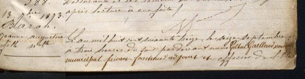

Côté Baron-Marchal · absente de l'arbre transmis, ajoutée par l'enquête
Anne Baron
Dates inconnues
Mère de Jeanne BARON MARCHAL.
Récit
Anne Baron n'est connue que par les actes de Jeanne Augustine. L'acte de naissance de 1873 la désigne comme mère : célibataire, 25 ans, native et résidente de Lyon. Il rapporte la déclaration de l'accoucheuse sans établir qu'elle existe. Au mariage de 1897, Jeanne Augustine est dite « fille naturelle non reconnue » d'Anne Baron et d'un père inconnu ; l'acte de décès de 1922 la dit « fille d'Anne Baron décédée ».
Le lien avec Prudence Baron, mère des sœurs Marchal, n'est pas établi, et aucune Anne Baron n'a été retrouvée à Clermont-Ferrand en 1873. Son identité reste une question ouverte.
Récit rédigé le 2 novembre 2026 à partir de la base, qui fait foi. Chaque marque ouvre la preuve du passage.
Famille
Sa vie dans le temps
- Troisième République
- L'acte de décès de 1922 dit Jeanne Augustine « fille d'Anne Baron décédée » ; aucun père n'est nommé. — Paris vérifié
Documents (3)


Autres sources citées
- Décès de Jeanne Augustine Baron Marchal, épouse Dubart, Paris 10e, 4 mai 1922 (photocopie conforme délivrée le 17/09/2012) Acte d'état civil · Mairie du 10e arrondissement de Paris · non visible
Ce qu'on ignore
Qui est la mère « Anne Baron » de Jeanne Augustine ? Lien avec Prudence Baron ?
infructueuse · 2026-11-02 — L'acte de 1922 répète « fille d'Anne Baron décédée » (AP90) et le faire-part de 1897 dit Augustine « nièce » des Orsay (AP97) ; aucun document lu n'établit un lien entre Anne Baron et Prudence Baron. Non établi. Pistes : Acte de décès d'Anne Baron (Clermont-Ferrand, après 1873) ; actes de Pontivy sur les Baron ; mentions marginales de l'acte de naissance de 1873. · R0112
Continuer l'exploration
Dossier complet : toutes les informations et leurs sources
Mère DÉCLARÉE de Jeanne Augustine dans l'acte de 1873. Identité possiblement fictive : ne pas fusionner avec une personne réelle sans preuve (voir identifications).
Identification candidate : Augustine MARCHAL (P13354) — Tradition familiale et arbre ; prénom Augustine donné à l'enfant. Aucun acte ne le prouve. Le nom Baron est celui de Prudence, mère d'Augustine (ne la désigne pas plus que sa sœur). Le prénom Augustine peut aussi honorer une tante ou une marraine. La « tradition familiale » est l'arbre, pas une source indépendante. Contre-indice apparent, faible : legs de 1909 « en l'absence de descendance » (non vérifié ; un enfant non reconnu n'est pas un descendant juridique). Faire-part « leur nièce » : compatible.
Identification candidate : Anne Louise Angélique dite Anaïs MARCHAL (PN0001) — Premier prénom « Anne » (prénom courant, porté aussi par une cousine Baron). Indice d'âge très faible et contradictoire (24 ans en 1872 est incompatible avec plus de 50 ans en 1897). L'adoption ne départage pas (une tante peut adopter, A0060). Contre-indice possible : faire-part « leur nièce ». Aucun acte ne le prouve.
Identification candidate : Marie Anne Jeanne BARON, fille de Louis Marie Baron et de Marie Anne Guillermo, cousine germaine des sœurs Marchal — Homonymie partielle et appartenance à la famille maternelle ; aucune date connue ; piste du rapport Heredis (S-RAPPORT, ligne 477), non vérifiée.
Biographie
Récit rédigé le 2026-11-02 à partir de la base, qui fait foi. Les crochets renvoient aux assertions (onglet Toutes les informations).
Anne Baron n'est connue que par les actes de Jeanne Augustine. L'acte de naissance de 1873 la désigne comme mère : célibataire, 25 ans, native et résidente de Lyon. Il rapporte la déclaration de l'accoucheuse sans établir qu'elle existe. [A0003] Au mariage de 1897, Jeanne Augustine est dite « fille naturelle non reconnue » d'Anne Baron et d'un père inconnu ; l'acte de décès de 1922 la dit « fille d'Anne Baron décédée ». [A0013, A0351]
Le lien avec Prudence Baron, mère des sœurs Marchal, n'est pas établi, et aucune Anne Baron n'a été retrouvée à Clermont-Ferrand en 1873. [A0351] Son identité reste une question ouverte.
Faits clés
- Naissance : inconnu (rien dans la base)
- Parents : inconnus (aucune filiation dans la base)
- Mariage : inconnu (aucun conjoint dans la base)
- Décès : inconnu (rien dans la base)
Famille
Liens tirés des assertions de la base ; le statut de chaque lien est celui des assertions citées. Les proches plus éloignés sont calculés à partir de ces liens directs.
Parents
- aucun dans la base.
Conjoint(s)
- aucun dans la base.
Enfants
Frères et sœurs
- aucun dans la base.
Proches et alliés (calculés)
Gendres et belles-filles
- Léon DUBART (P5227) — conjoint de Jeanne Augustine BARON MARCHAL (P5229) [A0003 vérifié, A0010 vérifié, A0013 vérifié, A0351 vérifié, A0355 partiellement vérifié, A0458 partiellement vérifié, A0468 vérifié, AR0170 non vérifié]
Petits-enfants
- Edouard Jean "René" DUBART (P5184) — par Jeanne Augustine BARON MARCHAL (P5229) [A0003 vérifié, A0013 vérifié, A0351 vérifié, A0355 partiellement vérifié, A0402 vérifié, A0412 partiellement vérifié, A0451 vérifié, AR0171 non vérifié]
Autres personnes citées dans les mêmes actes (sans parenté établie)
- Anne Louise Angélique MARCHAL (PN0001) — apparenté de Jeanne Augustine BARON MARCHAL (P5229) [A0013 vérifié]
Toutes les informations
- [A0351] vérifié · transcription · confiance moyenne — L'acte de décès de 1922 dit Jeanne Augustine « fille d'Anne Baron décédée » ; aucun père n'est nommé.
-
[A0003] vérifié · transcription · confiance forte — L'acte de 1873 désigne comme mère « Anne Baron, célibataire, âgée de vingt-cinq ans, native de Lyon (Rhône) y demeurant ».
- Limite : L'acte rapporte une déclaration de la sage-femme ; il n'établit pas qu'Anne Baron existe, ni qu'elle a 25 ans ou vient de Lyon.
- Sources : S0001
-
[A0013] vérifié · transcription · confiance forte — L'acte de mariage qualifie Jeanne de « fille majeure et naturelle non reconnue de Anne Baron, et d'un père inconnu ; fille adoptive de Anne Louise Angélique Marchal ».
- Sources : S0002
Recherches menées
- [R0112] Qui est la mère « Anne Baron » de Jeanne Augustine ? Lien avec Prudence Baron ? — infructueuse : L'acte de 1922 répète « fille d'Anne Baron décédée » (AP90) et le faire-part de 1897 dit Augustine « nièce » des Orsay (AP97) ; aucun document lu n'établit un lien entre Anne Baron et Prudence Baron. Non établi. Pistes : Acte de décès d'Anne Baron (Clermont-Ferrand, après 1873) ; actes de Pontivy sur les Baron ; mentions marginales de l'acte de naissance de 1873.
Sources citées
- S0001 — Naissance de Jeanne Augustine (Baron), Clermont-Ferrand, 16 septembre 1873 (consultee, 6 E 113 109, vues 151-152)
- S0002 — Mariage Léon DUBART × Jeanne Augustine BARON MARCHAL, Tours, 26 avril 1897 (consultee, 6NUM8/261/331, vues 89-90)
- S0181 — Décès de Jeanne Augustine Baron Marchal, épouse Dubart, Paris 10e, 4 mai 1922 (photocopie conforme délivrée le 17/09/2012) (consultee, non visible)